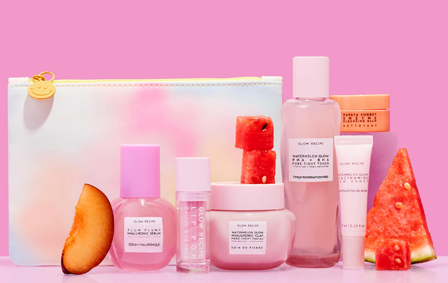

Welome to the corner of the page where we can share with you our story from the beginning to now
2014
Our company was founded in 2014 by Christine Chang and Sarah Lee, but at first it was a curation of other K-beauty products imported from Seoul to soft launch smaller brands into the USA.
2017
The start of their own in house skin care products

2021
Glow Recipe releases refillable pods to reduce CO2 emissions made with 50% post-consumer recycled materials and boasts a range of products that help everyhing from breakouts to wrinkles.